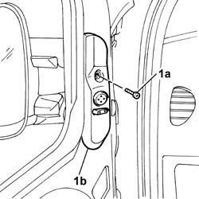
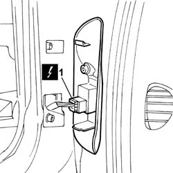
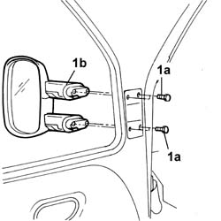
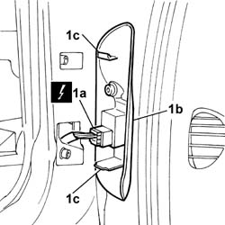
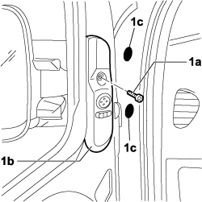
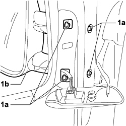
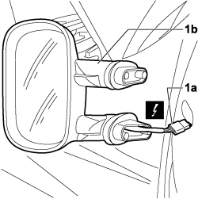

7005R30 electrically controlled door mirror (one) - r+r
- Path
- Procedures > 70 FITTINGS > 7005 PASSENGER COMPARTMENT FRONT SIDE DOORS > 7005R front door mirrors > 7005R30 electrically controlled door mirror (one) - r+r
- Kind
- repair procedure (removal / refitting; the operation number is the code)
- Applies to
- all engines; all production periods
- Interactive page
- https://sloeber94.github.io/elrnDB-fDbl/en/#/2585022
Applies to: engines: 1.2 8v, 1.6 16v, 1.3 JTD 16V, 1.9 JTD 8V, 1.9 DIESEL; all production periods
 Removing
Removing
 Refitting
RefittingDisconnect the battery negative terminal.
1. Undo the fixing bolt (1a) and remove the embellishment (1b) from its seating complete with switch unit.

Applies to: engines: 1.2 8v, 1.6 16v, 1.3 JTD 16V, 1.9 JTD 8V, 1.9 DIESEL; all production periods
1. Disconnect the electrical connector.
Name | Connector | |
|---|---|---|
1 | Adjustable mirror control |

Applies to: engines: 1.2 8v, 1.6 16v, 1.3 JTD 16V, 1.9 JTD 8V, 1.9 DIESEL; all production periods
1. Undo the fixing bolts (1a) and remove the external rearview mirror (1b).

Applies to: engines: 1.2 8v, 1.6 16v, 1.3 JTD 16V, 1.9 JTD 8V, 1.9 DIESEL; all production periods
Refitting
RemovingFit the external rearview mirror and fix it with the bolts.
1. Connect the electrical connector (1a) and fit the embellishment (1b), fitting the retaining lugs (1c) in their seats, until they click into place.
 | Name | Connector |
|---|---|---|
1a | Adjustable mirror control |

Applies to: engines: 1.2 8v, 1.6 16v, 1.3 JTD 16V, 1.9 JTD 8V, 1.9 DIESEL; all production periods
Tighten the bolt securing the embellishment.
Connect the battery negative terminal.
Applies to: engines: 1.4 8v, 1.6 16v, 1.3 JTD 16V, 1.9 JTD 8V; production: da 12/03; only with equipment: MY 2005
Removing
Refitting- Turn the ignition key to the OFF position.
- Lift the bonnet
- Disconnect the negative battery terminal.
Description | Connector | |
|---|---|---|
BATTERY |
1. Unscrew bolt (1a), prise panel (1b) out of its saet with the switch unti and remove cover plugs (1c).

Applies to: engines: 1.4 8v, 1.6 16v, 1.3 JTD 16V, 1.9 JTD 8V; production: da 12/03; only with equipment: MY 2005
1. Tighten bolts (a) fixing door mirror (1b).

Applies to: engines: 1.4 8v, 1.6 16v, 1.3 JTD 16V, 1.9 JTD 8V; production: da 12/03; only with equipment: MY 2005
1. Disconnect the electrical connection (1a) and remove door mirror (1b) from the vehicle.
Description | Connector | |
|---|---|---|
1a | DRIVER SIDE DOOR MIRROR |
Description | Connector | |
|---|---|---|
1a | PASSENGER SIDE DOOR MIRROR |

Applies to: engines: 1.4 8v, 1.6 16v, 1.3 JTD 16V, 1.9 JTD 8V; production: da 12/03; only with equipment: MY 2005
Refitting
Removing- Check the condition of the door mirror
- Connect the door mirror electrical connection.
Description | Connector | |
|---|---|---|
DRIVER SIDE DOOR MIRROR |
Description | Connector | |
|---|---|---|
PASSENGER SIDE DOOR MIRROR |
- Tighten the bolts fixing the external rear view mirror.
- Reposition the cover plugs in their seats.
- Position the panel with switch unit in its seat and tighten the bolt.
- Connect the negative battery terminal.
Description | Connector | |
|---|---|---|
BATTERY |